Практичний досвід · журнал «ДентАрт» 2013 №1 (70)
Резорбція кореня при відбілюванні девітальних зубів, або Як можна зіпсувати гарне «ендо»
ROOT RESORPTION AFTER BLEACHING NON-VITAL TEETH, OR HOW A GOOD «ENDO» CAN BE SPOILED
«Попереджений — означає озброєний». Навряд чи можна посперечатися з цією древньою істиною. Так і в стоматології: озброєний знаннями — попереджений про наслідки.
Як для молодих, так і для досвідчених лікарів, гадаю, буде цікавою демонстрація прикладу дуже грізного ускладнення внаслідок нашої непоінформованості про наслідки стоматологічних втручань. Ідеться про одне з найбільш несприятливих ускладнень при відбілюванні зубів — резорбцію кореня.
Клінічний випадок 1
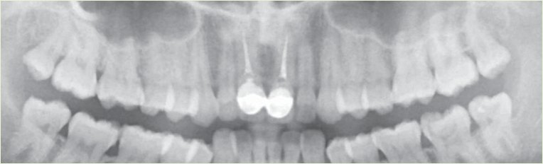
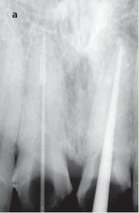
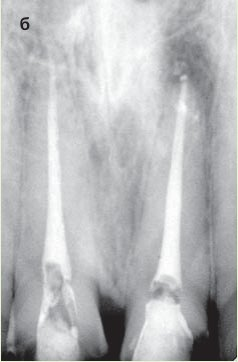
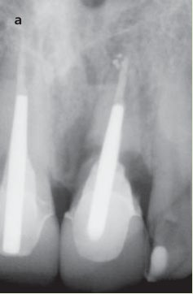
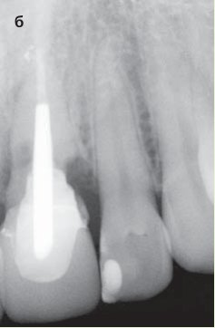
Пацієнтка Є. у 2006 році звернулася до стоматолога зі скаргами на неестетичність коронок передніх зубів, набряк і кровоточивість ясен у зоні цих конструкцій.
Після стоматологічного обстеження виконано діагностичну ортопантомограму (фото 1).
Попередній діагноз: локалізований пародонтит хронічного перебігу в зоні зубів 11 і 21. Хронічний фіброзний періодонтит зуба 11, хронічний гранулематозний періодонтит зуба 21.
З анамнезу: зуби 11 і 21 раніше були ендодонтично ліковані і відновлені металокерамічними коронками, які не відповідають анатомо-функціональним вимогам.
При огляді відзначається дисколорит кореня зуба 21, хронічний фіброзний пульпіт зуба 37, скол пломби зуба 37, множинний карієс зубів. Також діагностована патологія прикусу (скупченість зубів у фронтальній ділянці нижньої щелепи, звуження верхньої і нижньої щелеп у зоні премолярів, глибока крива Шпеє). Пацієнтці запропоновано такий план лікування: зняття металокерамічної конструкції, повторне ендодонтичне лікування зубів 11 і 21, ендодонтичне лікування зуба 37, лікування карієсу, тимчасове протезування ендодонтично лікованих зубів з подальшою заміною тимчасових коронок на постійні після ортодонтичного втручання. Від ортодонтичного лікування пацієнтка відмовилася. Інші етапи були узгоджені, і отримана письмова згода пацієнтки на лікування. Пацієнтка була зацікавлена в поліпшенні естетики зуба 21 шляхом відбілювання. Було обрано методику внутрішньоканального відбілювання.
Вище вміщено прицільні рентгенівські знімки, виконані при ендодонтичному втручанні в зуби 11 і 21 (фото 2).
При внутрішньоканальному відбілюванні застосовували 33% розчин перекису водню. Тривалість експозиції під герметичною пов'язкою — 6 днів. Естетичний результат був добрим. Решту лікування проведено у відповідності з узгодженим планом. Після цього пацієнтка не з'являлася на профілактичні огляди близько 4 років.
У 2010 році пацієнтка звернулася до стоматолога зі скаргами на біль і набряк ясен, виділення гною, рухомість верхнього центрального лівого різця. Перші симптоми з'явилися близько 8 днів тому у вигляді невеликої рухомості зуба і болю при натискуванні на ясна біля цього зуба.
Об'єктивно: загальний статус не змінений, обличчя злегка асиметричне через припухлість верхньої губи ліворуч, ясна біля зуба 21 набрякли, гіперемовані, є свищі з гнійними виділеннями (два — на вестибулярній, один — на піднебінній поверхні на відстані приблизно 5-7 мм від краю ясен). Зуб рухомий у вестибуло-оральному напрямку на 2-3 мм і на 1 мм — у вертикальному.
Було зроблено прицільні рентгенівські знімки (фото 3).
На рентгенограмі зуба 21 у ділянці середньої третини кореня є велика резорбція кореня і деструкція кісткової тканини з нечіткими контурами, розміром 0,5х 0,7 см на медіальній поверхні і 0,7х 0,8 см на дистальній.
Діагноз: загострення хронічного локалізованого пародонтиту в зоні зуба 21, резорбція кореня зуба 21.
У зв'язку з несприятливим прогнозом пацієнтці було запропоновано видалення зуба 21 з подальшим тимчасовим відновленням дефекту адгезивною конструкцією, відновлення об'єму кісткової тканини альвеолярного відростка, спостереження упродовж 6-12 місяців і подальше постійне протезування з опорами на зубах 22 і 11 — або імплантація зуба 21 і протезування на імплантаті.
Зуб 21 видалено, при видаленні він не був пошкоджений. Нижче вміщено фото видаленого зуба. Зверніть увагу на колір кореня і на обсяг його руйнування (фото 4).
Далі було проведено тимчасове протезування адгезивною конструкцією з використанням сепарованої і відполірованої коронки видаленого зуба (фото 5).
Через 2 місяці було проведено аугментацію альвеолярного гребеня з використанням кісткового матеріалу і мембрани (фото 5 в-г).
Нині пацієнтка перебуває на етапі імплантації.
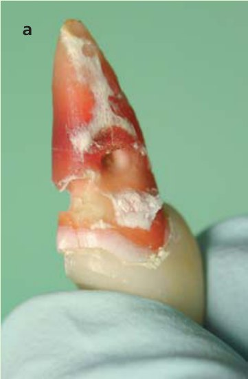
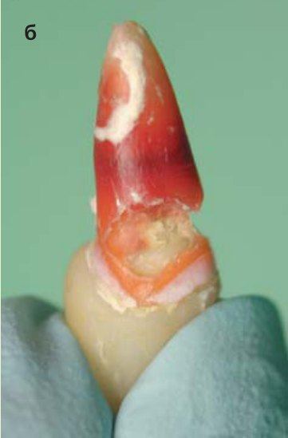

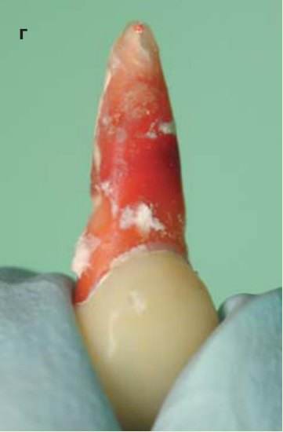
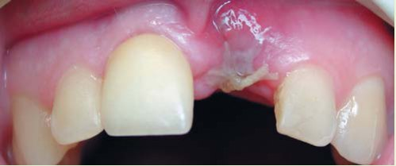
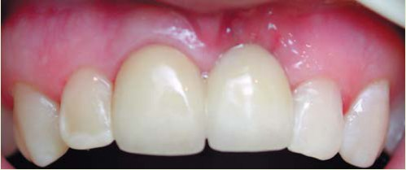
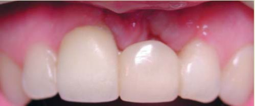
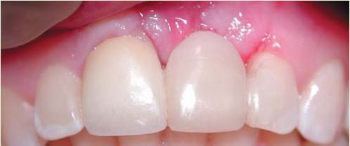
Клінічний випадок 2
Для діагностики, прогнозу і вибору тактики лікування найбільш інформативним дослідженням є комп'ютерна томографія в зоні ураженого зуба.
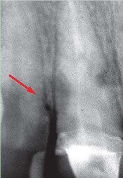
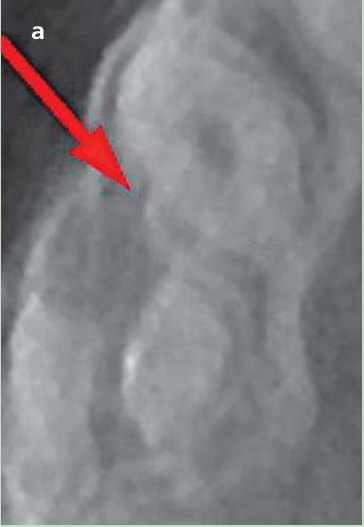
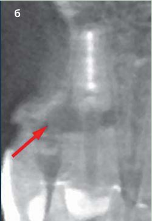
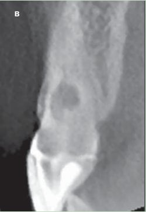
Наведені клінічні приклади змушують не лише замислитися, але й проаналізувати причини резорбції кореня як ускладнення, а також знайти шляхи вирішення цієї проблеми. У стоматологічній літературі небагато відомостей про причини, патогенез і лікування цієї патології. Є різні думки про її назву. Практично всі відносять цю резорбцію до зовнішніх резорбцій кореня, уточнюючи локалізацію, називаючи латеральною, цервікальною. Причини цієї патології остаточно не з'ясовані. Деякі автори, підкреслюючи ятрогенний розвиток, називають її ідіопатичною.3, 5 Дослідження засвідчили, що найімовірніше зовнішня цервікальна резорбція виникає при оголенні шийки зуба (втраті епітеліального прикріплення), відкритих дентинних канальцях у зоні шийки, протравлюванні дентину перед відбілюванням, травмі в анамнезі.14 Припускають, що в патогенезі відіграє роль денатурація колагенових волокон періодонту перекисними сполуками, вільними радикалами і запуск імунної реакції відторгнення змінених білків як чужорідних. Очевидно, в розвитку патології беруть участь медіатори лізису кістки та активація остеокластів. Найцікавіші відомості про резорбції можна знайти тут: https://sites.google.com/site/tanyaivanof/stati
Тактика, прогноз і лікування при діагнозі «резорбція кореня»
У 1990 році Хейтерсей ( Heithersay)16 запропонував клінічну класифікацію пришийкових резорбцій, що ґрунтується на поширенні ураження (схема 1). Ця класифікація дає можливість адекватного вибору тактики лікування і прогнозування результатів.
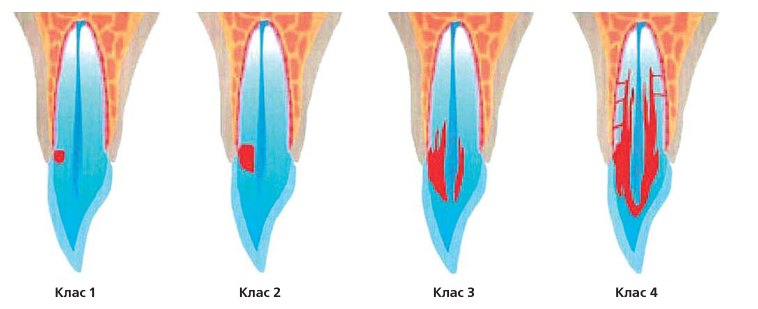
За безсимптомної резорбції, випадково виявленої на рентгенівському знімку, пацієнта обов'язково інформують про його стан і ставлять на диспансерне спостереження.
За початкової резорбції (клас 1) рекомендоване повторне ендодонтичне лікування із застосуванням тривалої (2-3 місяці) експозиції в кореневому каналі гідроокису кальцію3 або інших препаратів кальцію під тимчасовою пов'язкою.17
У разі пришийкової резорбції класу 1 прогноз найсприятливіший. Одним з варіантів лікування є ортодонтична підготовка (витягування до рівня резорбції) і реставрація за допомогою адгезивних технологій.
За резорбції класу 2 і 3 застосовують ендодонтичне і хірургічне лікування з клаптевою операцією і прямою реставрацією дефекту амальгамою, склоіономерним цементом або ПроРут МТА (ProRoot MTA). Дуже важливо ретельно очистити резорбовану ділянку від грануляцій і обробити після вискоблювання 90% водним розчином трихлороцтової кислоти. Місцеве застосування трихлороцтової кислоти призводить до коагуляційного некрозу тканин без шкоди для сусідніх тканин пародонту.16 Вона також інфільтрує канальці, які недоступні для інструментів, але в яких є тяжі грануляційної тканини.
Резорбція класу 4 найчастіше лікуванню не піддається. У цьому випадку доцільне негайне видалення зуба для запобігання залученню періодонту сусідніх зубів і втраті кістки альвеолярного відростка.
Що треба робити, щоб максимально убезпечити себе і своїх пацієнтів від цього ускладнення?
Проводьте відбілювання акуратно, дотримуючись технології:
- Замініть усі старі реставрації для усунення підтікань через крайові дефекти.
- Мінімально препаруйте кореневий канал у ділянці устя, щоб запобігти стоншуванню стінок кореня.
- Ізолюйте кореневу пломбу на рівні емалево-цементного з'єднання прокладкою, не тоншою 3 мм, із склоіономерного або цинк-фосфатного цементу (орієнтуйтеся на рівень вершини міжзубної перегородки).
- Не застосовуйте тепло або світло як каталізатор реакції відбілювання.
- Використовуйте концентрацію перекису водню в гелі або пасті не більше 33%.
- Експозиція не повинна перевищувати рекомендовані виробником терміни.
Деякі автори радять для профілактики резорбцій після внутрішньоканального відбілювання проводити тимчасове пломбування кореневого каналу гідроокисом кальцію.4
Завжди контролюйте результати вашого лікування, проводячи рентгенологічний контроль щороку.
Усі випадки внутрішньоканального відбілювання мають віддалені терміни розвитку ускладнень, що робить необхідним тривале спостереження після відбілювання.
Крім того, в литературі1, 2 є вказівки на аналогічні випадки при офісному відбілюванні вітальних зубів.
Під час процедури відбілювання як девітальних, так і вітальних зубів можуть з'являтися симптоми. У живих зубах це характерні «простріли», біль, властивий гострій гіперемії пульпи. Для девітальних зубів типовий біль у яснах, які оточують відбілюваний зуб. Не завжди він пов'язаний з підтіканням відбілювача через негерметичну тимчасову пов'язку. Це може свідчити про вихід відбілювального препарату в періодонт через бічні дентинні канальці. До таких симптомів треба ставитися серйозно й інформувати пацієнта.
Рекомендуємо таку форму інформування пацієнта:
Що треба знати перед відбілюванням зубів
Вирішуючи, відбілювати зуби чи ні, слід мати на увазі, що можуть виникнути деякі проблеми або ускладнення. Імовірність їх появи невелика, і у більшості випадків вони легко усуваються. Під час консультації стоматолог зможе оцінити цю ймовірність і дати Вам необхідні рекомендації. Запам'ятайте: про будь-який стійкий або суттєвий дискомфорт слід якнайшвидше повідомити лікаря.
Чутливість зубів
Упродовж перших 24 годин після відбілювання деякі пацієнти відчувають підвищення чутливості зубів.
При офісному відбілюванні чутливість зазвичай минає упродовж 1-2 днів.
При домашньому відбілюванні необхідно скоротити час носіння кап або припинити їх використання до зникнення чутливості.
Якщо Ваші зуби і так чутливі, відбілювання може посилити ці симптоми. У таких випадках необхідно відкласти відбілювання до того, як лікар проведе процедури зі зниження чутливості. Якщо чутливість після відбілювання занадто висока, Ви можете вживати знеболювальні засоби до зникнення симптомів.
Подразнення ясен
Відбілювання зубів може викликати тимчасове запалення ясен. При клінічному відбілюванні це може бути результатом потрапляння дуже малої кількості гелю під захисне покриття ясен. Іноді з'являється відчуття печіння ясен. Обов'язково повідомте про Ваші відчуття лікаря.
При домашньому відбілюванні подразнення може бути наслідком застосування кап упродовж тривалого часу на початку процедур. У такому разі необхідно скоротити кількість годин носіння кап або припинити їх застосування до зникнення цих відчуттів.
Капи можуть також перекривати ясна і створювати умови для контакту з яснами впродовж тривалого часу. У цьому випадку необхідно звернутися в клініку, щоб лікар міг провести необхідну корекцію капи.
Негерметичні реставрації або карієс
Відбілювання переважно спрямоване на зовнішню поверхню зубів (за винятком депульпованих). Проте якщо у вас є нещільно прилеглі реставрації (пломби, коронки, вініри), гель проникає всередину зуба, і це може викликати ураження пульпи. Такі реставрації слід замінити до відбілювання. Наявність каріозних уражень також може сприяти глибокому проникненню гелю і розвитку пульпіту. Усі каріозні порожнини мають реставруватися до відбілювання.
Пришийкові абразія і ерозія
У пришийковій зоні зуба можуть спостерігатися жолобки і заглиблення, темніші на вигляд, ніж інші ділянки зуба. Таке враження складається через відсутність емалі у цьому місці. Навіть якщо в цих зонах не виникала чутливість, відбілювальний гель потенційно може проникати в дентин і викликати чутливість. Ці ділянки не підлягають відбілюванню і мають реставруватися до процедури відбілювання.
Резорбція кореня
У деяких випадках при відбілюванні корінь зуба починає розчинятися або зсередини, або зовні. Резорбція кореня частіше з'являється при відбілюванні депульпованих зубів. Цей процес часто іде без зовнішніх проявів. Щоб вчасно виявити зміни, необхідно періодично робити рентгенівські знімки відбілених зубів.
Ефект на реставраціях
Домашнє відбілювання зубів може вплинути на якість реставрацій, роблячи їх м'якшими і сприйнятливішими до забарвлювання. Тому Ви маєте бути готові до того, що реставрації на фронтальних зубах після відбілювання необхідно буде замінити. Оскільки відбілюються тільки натуральні зуби, а не штучні коронки, вініри і реставрації, можливо, Вам потрібно буде замінити їх, щоб вони відповідали новому кольору зубів.
Висновок
Потреби наших пацієнтів дуже різноманітні, а вимоги до естетики надзвичайно високі. Завдання кожного лікаря — вдумливо і зважено підходити до лікування пацієнта, намагаючись не перестаратися у прагненні до найкращого результату. Адже навіть така «безпечна», за твердженнями реклами від відбілювальної індустрії, процедура може мати найгірші наслідки. Інформувати пацієнта про можливість такого ускладнення, зробити все для запобігання його розвитку — наш обов'язок. А рішення про відбілювання — за пацієнтом.
Можливо, частота виникнення подібних ускладнень на практиці і не дуже велика (близько 1%), але резорбція, виявлена на стадії клінічних ознак, найчастіше консервативному лікуванню не піддається і веде до втрати зуба в естетично значущій зоні.
Для ширшого погляду на проблему можна знайти інформацію про відбілювальні засоби в стоматології за такими посиланнями:
http://ec.europa.eu/health/opinions/en/ tooth-whiteners/index.htm
http://www.ada.org/sections/about/pdfs/HOD_whitening_rpt.pdf
Але це вже тема для іншої статті.
Література
- Гольдштейн Рональд. Эстетическая стоматология. Том 1 –2003. –С. 77, 82-83.
- Гутман Дж., Думша Т., Ловдел П. Решение проблем эндодонтии. –2008. –С. 342-345.
- Коэн С., Бернс Р. Эндодонтия. Перевод с английского О.А.Шульги, А.Б.Куадже. –2000. –С. 487-488, 494-495.
- Роберсон Т., Хейманн Г., Свифт Э. Оперативная техника в терапевтической стоматологии по Стюрдеванту. –2006. –С. 451-452.
- Tronstad L. Clinical Endodontics. Р. 150-152.
- Dahl J.E. and Pallesen U. Tooth Bleaching — a Critical Review of the Biological Aspects CROBM. –2003, 14: 292.
- Harrington C.V., Natkin E. External resorption associated with bleaching of pulpless teeth. J Endod. –1979. 5:344-348.
- Cvek M., Lindvall A.M. External root resorption following bleaching of pulpless teeth with oxygen peroxide. Endod Dent Traumatol. –1985. 1:56-60.
- Gimlin D.R., Schindler W.G. The management of postbleaching cervical resorption. J Endod. –1990. 16:292-297.
- Al-Nazhan S. External root resorption after bleaching: a case report. Oral Surg Oral Med Oral Pathol. –1991. 72:607-609.
- Goon E.Y., Cohen S., Borer R.F. External cervical root resorption following bleaching. J Endod. –1986. 12:414-418.
- Latcham N.L. Postbleaching cervical resorption. J Endod. –1986. 12:262-264.
- Latcham N.L. Management of a patient with severe postbleaching cervical resorption. A clinical report. J Prosthet Den.t –1991. 65:603-605.
- Lado E., Stanley H. and Weisserman M. Cervical resorption in bleached teeth. Oral Surg. –1983. 55:78.
- Bergmans L., Van Cleynenbreugel J., Verbeken E., Wevers M., Van Meerbeek B., Lambrechts P. Cervical external root resorption in vital teeth. X-ray microfocustomographical and histopathological case study. J Clin Periodontol. –2002. 29: 580-585.
- Heithersay G.S. Invasive cervical resorption: An analysis of potential predisposing factors. Treatment of invasive cervical resorption: an analysis of results using topical application of trichloroacetic acid, curettage and restoration. Quintessence Int. –1999. 30: 83-110.
- Pierce A., Berg J.O., Lindskog S. Calcitonin as an alternative therapy in the treatment of root resorption. J Endod. –1988. 14:459-64.